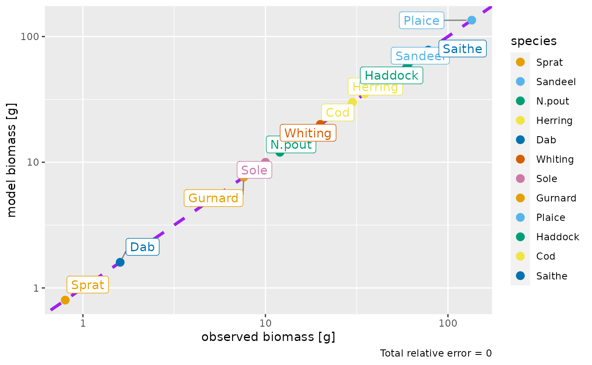

![[Experimental]](figures/lifecycle-experimental.svg) The function adjusts the abundances of the species in the model so that their biomasses
match with observations.
The function adjusts the abundances of the species in the model so that their biomasses
match with observations.
matchBiomasses(params, species = NULL)Arguments
- params
A MizerParams object
- species
The species to be affected. Optional. By default all observed biomasses will be matched. A vector of species names, or a numeric vector with the species indices, or a logical vector indicating for each species whether it is to be affected (TRUE) or not.
Value
A MizerParams object
Details
The function works by multiplying for each species the abundance density
at all sizes by the same factor. This will of course not give a steady
state solution, even if the initial abundance densities were at steady state.
So after using this function you may want to use steady() to run the model
to steady state, after which of course the biomasses will no longer match
exactly. You could then iterate this process. This is described in the
blog post at https://bit.ly/2YqXESV.
Before you can use this function you will need to have added a
biomass_observed column to your model which gives the observed biomass in
grams. For species for which you have no observed biomass, you should set
the value in the biomass_observed column to 0 or NA.
Biomass observations usually only include individuals above a certain size.
This size should be specified in a biomass_cutoff column of the species
parameter data frame. If this is missing, it is assumed that all sizes are
included in the observed biomass, i.e., it includes larval biomass.
Examples
params <- NS_params
species_params(params)$biomass_observed <-
c(0.8, 61, 12, 35, 1.6, 20, 10, 7.6, 135, 60, 30, 78)
species_params(params)$biomass_cutoff <- 10
params <- calibrateBiomass(params)
params <- matchBiomasses(params)
plotBiomassObservedVsModel(params)
